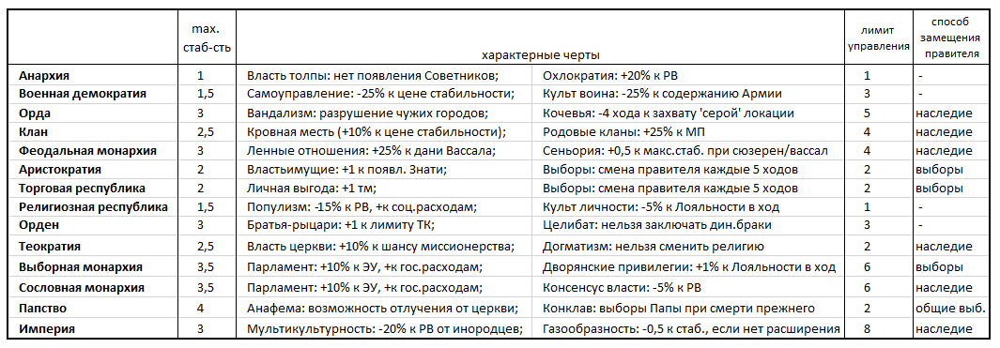

Игровые государства, разделены на два вида территорий – провинции и города (обозначены на карте «квадратом»).
В балансах все типы территорий имеют информацию о населении, риске восстания (РВ), доходе и др.
Столицей страны является город, специально отмеченный на карте (точка внутри квадрата).
Перенос столицы в другую провинцию возможен (необходимо потратить 10 о/пр). При захвате противником и присоединении к своей территории бывшей столичной провинции – игрок может бесплатно выбрать новой столицей др. город.
Города, отмеченные на карте знаком «Х», являются разрушенными. При разрушении города (если такая возможность есть у страны), все постройки в нём сносятся, а запись о городе исключается из баланса страны.
Восстановление разрушенного города стоит ½ от цены основания нового города.
Новые города возводятся только в предопределенных на карте местах и являются аналогами реальных городов.
Размер страны определяется количеством входящих в нее провинций и городов. Каждая провинция увеличивает размер страны на 1, город – на 0,5.
Стабильность - показатель удовлетворенности населения и его лояльности к правителю. Государства с разными формами правления имеют разный максимальный показатель стабильности. Также на максимально допустимый показатель стабильности влияют внедренные инновации, личность правителя, наличие тех или иных персонажей, товаров и др. факторы. Стабильность напрямую влияет на риск восстания (РВ).
Стоимость стабильности – изменяемый в ходе игры параметр. На ее стоимость влияют размер страны, скилл правителя, форма правления, настройки внутренней политики (ВП), изученные игроком технологии, наличие иноверных и инокультурных провинций, наличие построек, изменяющих стоимость стабильности и др. факторы.
Стоимость стабильности изменяется также и в зависимости от близости к ее максимальному значению (т.е. увеличение стабильности с +2 до +3 обходится стране дешевле, чем с +3 до +4).
Отдельные действия игрока влияют на снижение стабильности в гос-ве. Перечень этих действий дан в балансе страны.
Повышение стабильности осуществляется при инвестировании в неё установленной балансом страны суммы. Денежные инвестиции допускают увеличение стабильности на 0,5 или 1 пункт, но не в ход, когда соответствующее понижение стабильности было вызвано действиями самого игрока.
Стабильность может изменяться также в результате случайных событий.
Падение стабильности ниже 0 невозможно.
Казну государства пополняют:
Расходы государства составляют:
Государство несет расходы на строительство, найм войск и ввод военных объектов, экспедиции и др.
Все расходы денежных средств идут из кэша (казны на начало хода). Часть расходов списывается автоматически. Финансирование расходов осуществляется в порядке очередности, описанной игроком в заявке.
Если кэш страны не позволяет провести определенную трату, то Ведущий блокирует этот приказ. Если при подсчете хода у страны возрастают незапланированные расходы (например, в следствие изменения кол-ва или цены закупаемого товара на рынке), то дефицит денег покрывается за счет внутреннего займа и инфляции.
Заимствованные у других стран суммы и эмиссионный доход поступают в распоряжение игрока на следующий ход. Внутренний займ становится доступным уже в текущий ход. Заимствования вызывают рост инфляции.
Эффективность управления государством — показатель того, как полно собираются налоги с подконтрольных территорий.
Эффективность управления зависит от следующих факторов:
1) Размер государства (более крупными по площади странами гораздо сложнее управлять) и удаленность провинций/городов от столицы (чем дальше от столицы территория, тем ею сложнее управлять).
2) Развитие управленческих технологий (технологии улучшают навыки, совершенствуются методы и подходы к управлению, увеличивают лимит управления – т.е. такое количество провинций, которые могут эффективно управляться при соответствующем развитии).
3) Развитость дорожной сети (дороги обеспечивают связь столицы и окраин страны, влияют на скорость доставки корреспонденции, военную логистику, внутреннюю торговлю и т.п.).
4) Наличие персонажей-Знати.
5) Настройки ВП (страны с уклоном в сторону Централизации обладают бонусом к управлению).
6) Коррупция (см.ниже) снижает эффективность управления страной.
7) Ряд построек и выполненных миссий повышают управление страной.
Каждый игрок может устанавливать свой «внутриполитический курс», изменяя положение маркеров в следующих социально-политических сферах:
- Знать - Церковь: уклон в сторону Знати повышает Лояльность, уклонв сторону Церкви повышает выработку о/в
- Централизация: уклон в сторону Централизации повышает ЭУ, снижение централизации дает бонус к росту населения
- Бесправие – Свобода: Свобода увеличивает выработку н/о и кт/о, бесправие повышает доход от эксплуатации Рабов и риск их восстания.
Каждый маркер имеет диапазон движения от -3 до +3, показывая крен внутренней политики (ВП) в ту или иную сторону. Например, ВП Централизация 3 означает, что страна имеет высоко централизованную вертикаль гос.управления, а ВП Бесправие -3 означает, что в стране узаконена крайняя форма неравенства прав и свобод личности.
Если игрок желает изменить ВП, то получает штраф -1 к стабильности.
Нельзя делать сдвиг во ВП больше чем на 1 шаг за ход.
Законы. Законы имеют постоянно действующий характер (до их отмены или смены другим). Общее число возможных к принятию Эдиктов указано в балансе. Папа Римский принимает дополнительно Буллы, а Император СРИ – законы Священной Римской империи.
Решения – действия, продолжительностью 1 ход, дающие игроку указанные в них последствия. Для принятия решений нужно потратить определенное в условиях количество очков (о/пр, о/в, кт/о или в/о) или денег. Для принятия некоторых решений требуется наличие иных условий – персональных характеристик правителя, культурных традиций или построек. Например, решение «Организовать охоту» возможно, если в стране есть Угодье и т.п.
За 1 ход может быть инициировано только одно персональное решение.
Модификаторы ВП. В балансе указаны актуальные для страны модификаторы, отражающие её культурного и научного развитие, достаток продуктов питания (п/п), стабильности в обществе, развития внутреннего товарного рынка. Модификаторы дают эффект, указанный в балансе.
Для изменения модификатора игрок должен добиться изменения условий их возникновения. Например, повышая уровень грамотности в стране или заполняя рынок необходимым числом товаров.
Страны в игре могут иметь следующие формы правления, каждая из которых имеет свои уникальные особенности:
Форма правления устанавливается автоматически в зависимости от положения курсора ВП по линиям Знать-Демос и Централизация.
Например, для получения Аристократии, как ФП, необходимо иметь уклон в сторону Знати и Децентрализации, а Монархии – уклон в Централизацию и Знать. При этом, имеет значение и текущий строй в стране.
Строй
В игре есть 3 строя:
1) Родоплеменной;
2) Феодализм;
3) Сословно-представительный.
Значение текущего строя – в определении существующей в стране ФП, т.к. одним и тем же настройкам ВП, например, родо-племенному обществу будет соответствовать клан, как ФП, а феодальному обществу – феодальная монархия.
Для перехода страны в Феодализм требуется изучение технологий «Оммаж» и «Аренда земли», для перехода в Сословно-представительный строй – «Парламентаризм».
Коррупция как явление снижает эффективность управления государством.
На величину коррупции влияет величина кэша (чем больше казна страны, тем сильней тяга к ее разворовыванию) и некоторые другие факторы. Снижение коррупции происходит при определенных событиях, за счет внедрения инноваций, строительства Судов, повышения уровня Благочестия и др.
Эмиссия денег, денежные переводы, а также дефицит товаров на внутреннем рынке являются причиной инфляции. Также инфляция появляется вследствие недостатка денег в казне для покрытия текущих расходов страны.
Процент инфляции накапливается и влияет на фактический размер расходов, который несет страна.
Инфляция снижается в результате выполнения миссий, наличия специальных персонажей, ивентов и др. факторов.
Чем выше грамотность населения, тем ниже «стоимость» технологий, а также выше личные доходы населения (идет рост собираемости налогов с населения).
Увеличение уровня грамотности происходит за счет постройки ряда зданий, изучения технологий и др. факторов.
Риск восстания – уровень напряженности в обществе, которое готово перерасти в открытый бунт. РВ для каждой провинции рассчитывается отдельно и указан в балансе страны.
Уровень РВ – вероятность, выраженная процентом. При выпадении в конкретный ход события, происходит восстание. Если РВ в локации был меньше 50%, то восстание не сопровождается появлением взбунтовавшихся юнитов населения. В противном случае в балансе страны в соответствующей локации указываются юниты восставшей фракции. Игрок в текущий ход может вступить с ними бой, если его армия или гарнизон находятся на начало хода в данной локации или вследствие перемещения своей армии через восставшую территорию. Бой с восставшими идет по правилам боевых действий и отражается в сводке боёв в итогах хода.
Если восставшие не будут уничтожены на след. ход после появления, то восставшая территория или присоединяется к соседней стране (если у соседа религия/этнос идентичны восставшей локации), или образует самостоятельное независимое гос-во (при наличии исторических предпосылок). Если восстание победило в провинции, то с ней обособляется автоматически и город/города данной провинции.
Если в провинции произошло восстание (провинция/город захвачены восставшими), то ее население не уплачивает налоги, товары данной провинции не производятся.
На РВ оказывают влияние следующие факторы:
1) Общая стабильность в стране.
2) Является ли локация титульной по этническому составу и исповедуемой религии.
3) Настройки ВП.
4) Наличие в провинции построек, снижающих/увеличивающих РВ.
5) Численность населения провинции.
6) Культурные особенности отдельных народов и ФП.
Репрессиями (уничтожением части населения провинции) можно снижать численность населения при высоком РВ. Решение о репрессиях принимает игрок, если его правитель имеет перк Д (Деспот). Репрессии снижают РВ на 5%.
Репрессии отражаются в балансе знаком «репр».
Лояльность — это отношение элит страны к действующему правителю, степень ее повиновения и участия в делах страны.
Лояльность выражается в процентах. Максимальное значение 100%. Если присутствуют условия для снижения лояльности, то значение падает, и наоборот.
Факторы снижения Лояльности:
- Более высокий скилл Знати в сравнении со скиллом Правителя;
- Династический кризис (отсутствие наследника мужского пола в странах с монархической ФП, а также наличие 2-х и более наследников);
- Смена правящей династии;
- События, миссии и др.
Факторы роста Лояльности:
- Высокий скилл Правителя и его личностные характеристики;
- Особые постройки;
- Персонаж-Поэт;
- События, миссии и др.
Влияние показателя «Лояльность»:
1) Лояльность влияет на организацию Армии и Флота;
2) Лояльность влияет на МП (мобилизационный потенциал страны);
3) Низкая Лояльность может служить триггером для негативных ивентов — восстания Знати, волнений в Армии и т.п.
Благочестие — это отношение элит страны к этическим нормам.
Благочестие выражается в процентах. Максимальное значение 100%. Если игроком совершаются действия, снижающие Благочестие, то оно падает, и наоборот.
Влияние показателя «Благочестие»:
1) Снижение Коррупции;
2) Увеличение эфф-сти работы религиозных зданий;
3) Снижение цены совершения некоторых решений в стране.